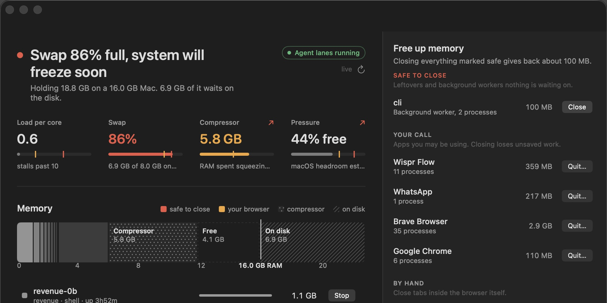

01
Swap fills first
Disk space has nothing to do with it. When RAM runs out, macOS writes memory to swap. At 86% the next allocation is where the freeze starts.
Menu-bar memory watchdog
FixMyMac watches RAM and swap, names the app eating both, and closes the leftovers before the freeze.
Version 0.3.2 · macOS 13 or later · Apple silicon · Signed and notarized by Apple
The dashboard, at 86% swap on a 16 GB Mac. Recorded example.
The ten minutes before a freeze
01
Disk space has nothing to do with it. When RAM runs out, macOS writes memory to swap. At 86% the next allocation is where the freeze starts.
02
Brave Browser: 35 processes, 2.9 GB. FixMyMac groups every child process under the app that owns it, so you close the right thing, not a random helper.
03
Close leftovers first. Kept profiles are never touched. Swap falls to 31%, the menu-bar dot turns green, and the work you had open stays open.
Every process under an app, every launchd job with its tree, and a memory bar that shows swap spilling past the RAM edge onto disk. Recorded on a 16 GB Mac at 86% swap.

Activity Monitor stops at a long list of helpers. FixMyMac follows the tree, finds the job that keeps coming back, and leaves what you marked as yours alone.
Every launchd job with the memory and CPU of its whole tree, the zombie processes it left behind, how often launchd restarted it, and who installed it. Stop removes it. Stop and disable keeps it from starting at login.
Mark a browser profile as Kept and cleanup never touches it. Leftover automation profiles go first.
Turn it on and choose Ask first, or let it close leftovers on its own. The activity log records every close and what it freed. Claude Code memory guide
FixMyMac flags an app whose memory keeps climbing, so you look before it crowds out everything else.
Everything you do by hand is free, for good. Pro adds the cleanup that runs while you work, and only the parts you switch on.
$0
$2.99 per month
Subscribe monthly$19 once, yours to keep launch price, then $29
Buy once for $19Checkout runs on Creem. Your license key arrives with the receipt: paste it into FixMyMac Settings and Pro turns on. Paying once covers your own Macs and a year of updates.
Memory checks and app controls run on your Mac. No account or sign-in is needed. The app updates itself from a signed feed.